PZ-01. Pizarras pardo rosáceas rojizas
|
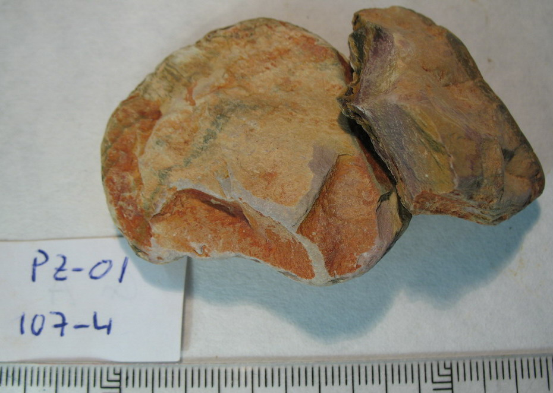 |
Colores: | Pardo claro (rosado); tinción pardo rojiza | Color: |
- Tinción pardo rojiza: 5YR6/6, Amarillo rojizo - Pardo claro (rosado): 10YR8/4, Marrón muy pálido |
||
| Color raya: | Pardo claro | |||||
|
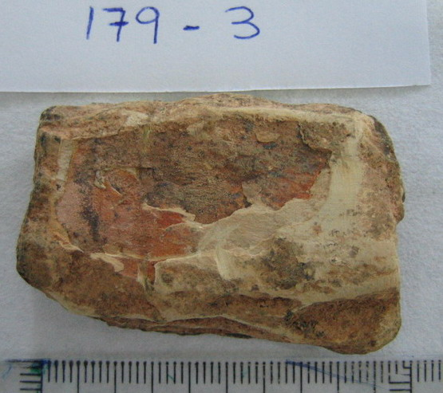 |
||||||
| Grano: | No apreciable | |||||
| Dureza: | Uña | |||||
| Friabilidad : | Escasa | |||||
| Forma: | Subangular | |||||
| Exfoliación: | Irregular (tipo pizarra) fácil | |||||
| Esquistosidad: | Poco apreciable | |||||
| Tacto: | Suave, sericítico (mancha) | |||||
| Densidad: | 2,35 g/ml | |||||
|
HCl 20%: |
No | |||||
| Observaciones: | Tonalidades verdosas claras. Vetas o motas negras o muy oscuras. El rojo óxido es superficial. La forma varía de angular a subangular y plana. La muestra 62 es bastante distinta de la muestra 179. La muestra 255 es de color gris oscuro con coloraciones violáceas. Muestras guardadas: 959-179 (1, 2, 3), 959- 62 (3), 959-107 (4), 958-255 (3), 958-265 (2) |
|
GL |
Frecuencia |
Litolofacies: |
| 1340 | 11 | Pizarras, grauwacas y cuarcitas |
| 1140 | 8 | Pizarras y algunas grauwacas con Posidonomyas, Goniatites y Archaeocalamites |
| 1340 | 7 | Pizarras, areniscas y cuarcitas con nódulos y capas finas de hierro y manganeso |
| 1140 | 3 | Pizarras y grauwacas con Posidonomyas, Goniatites y Archaeocalamites |
| 1340 | 2 | Pizarras, areniscas y grauwacas |
| 2050 | 1 | Pizarras y tufitas |
|
Litofacies secundarias: |
||
| 850 | 1 |
Pizarras y filitas mosqueadas |
| 1340 | 1 |
Pizarras, grauwacas y cuarcitas |
PZ-02. Pizarra pardo clara rojiza (PQ)
|
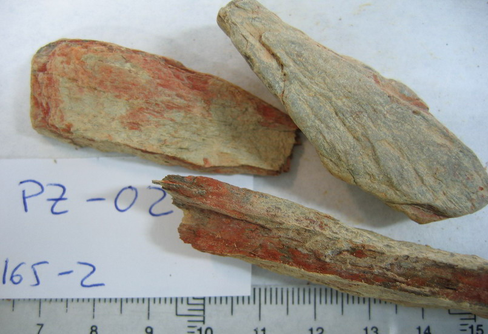 |
Colores: | Rojo teja; pardo claro (beige claro); gris (roca fresca) | Color: |
- Beige claro (superficial): 2.5Y8/2, Amarillo pálido - Gris (roca fresca): 5Y7/1, Gris claro - Rojo teja (interior): 2.5YR5/8, Rojo |
||
| Color raya: | Beige claro | |||||
| Grano: | Fino | |||||
| Dureza: | Uña - |
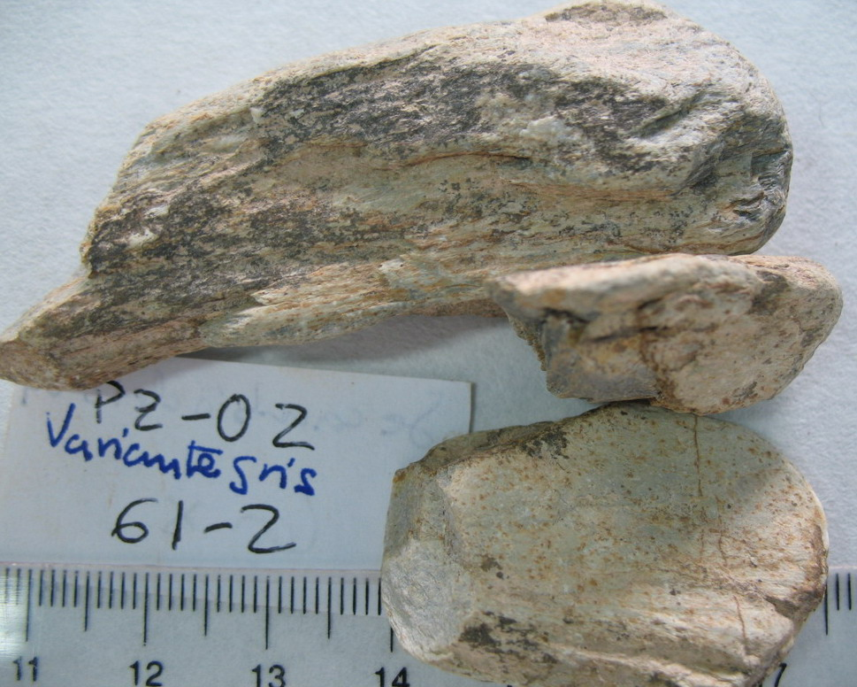 |
||||
| Friabilidad : | Media | |||||
| Forma: | Plana | |||||
| Exfoliación: | Irregular (tipo pizarra) fácil | |||||
| Esquistosidad: | Apreciable | |||||
| Tacto: | Suave, sericítico (mancha) | |||||
| Densidad: | 2,48 g/ml | |||||
|
HCl 20%: |
No | |||||
| Observaciones: Roca muy semejante a PZ-01, de exfoliación algo más fácil y con algunos tonos gris plomo y rojo teja intenso. Poco hierro. Existe una variante gris sin colores rojizos, pero con el mismo aspecto rico en cuarzo cuando se observa con la lupa, correspondiente a 959-61(2). Esta variante se parece a PZ-07, pero la 61-2 tiene un aspecto más cuarcífero en la lupa. La variante de 315-20 es más micácea. Muestras guardadas: 959-165 (2), 959-151 (1), 959-150 (2), 959-141 (3), 959-153 (2), 959-61(2), 315-20 (IFC). | 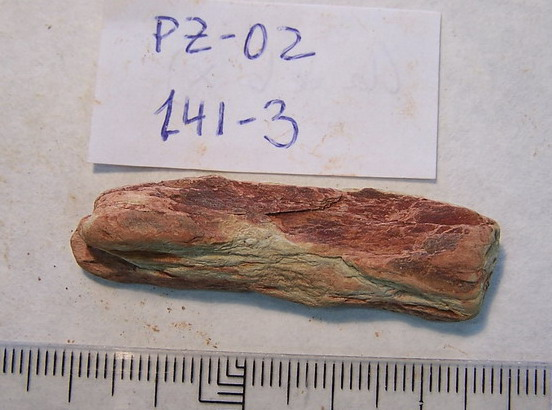 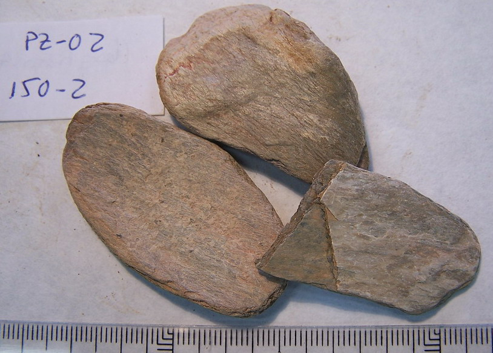 |
|
GL |
Frecuencia |
Litolofacies: |
| 1340 | 16 | Pizarras, areniscas y cuarcitas |
| 1340 | 5 | Pizarras, grauwacas y cuarcitas |
| 1340 | 3 | Pizarras, areniscas y cuarcitas con tufitas locales |
| 1340 | 3 | Pizarras y limolitas |
| 1150 | 2 | Pizarras y grauwacas con Posidonomyas, Goniatites y Archaeocalamites |
| 2050 | 2 | Pizarras y tufitas |
| 1340 | 2 | Pizarras, areniscas y grauwacas |
| 2050 | 2 | Pizarras, tufitas y tobas |
| 1150 | 1 | Pizarras y grauwacas |
| 1340 | 1 | Pizarras, cuarcitas, areniscas y cuarzowacas con nódulos y capas finas de hierro y manganeso |
|
Litofacies secundarias: |
||
| 1340 | 7 | Pizarras, grauwacas y cuarcitas |
| 1340 | 2 | Grauwacas y pizarras |
| 1150 | 1 | Pizarras y grauwacas con Posidonomyas, Goniatites y Archaeocalamites |
| 2050 | 1 | Pizarras y tufitas |
PZ-03. Pizarra gris-rosado (PQ)
|
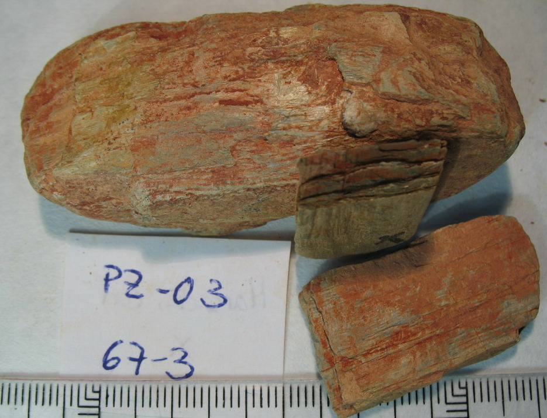 |
Colores: |
Rojo teja; gris plomo; rosado-beige |
Color: |
- Rosado beige: 5YR7/4, Rosa - Rojo teja: 2.5YR5/8, Rojo - Gris plomo: 2.5Y6/1, Gris |
||
| Color raya: | Gris muy claro |
|
||||
| Grano: | Fino | |||||
| Dureza: | Uña |
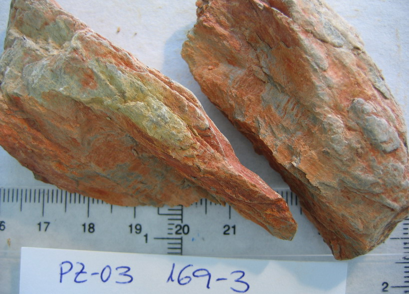 |
||||
| Friabilidad : | Escasa | |||||
| Forma: | Plana | |||||
| Exfoliación: | Irregular (tipo pizarra) fácil | |||||
| Esquistosidad: | Apreciable | |||||
| Tacto: | Suave, sericítico (mancha) | |||||
| Densidad: | 2,36 g/ml | |||||
|
HCl 20%: |
No | |||||
|
Observaciones: El color gris es mucho más abundante que en PZ-02 o PZ-01. Algo más duras y de tacto menos sericítico. En el horizonte 169-3 la densidad es mayor, 2,55. La muestra 959-67 presenta una friabilidad de muy friable a media. Poco hierro. La muestra 958-195 (3) se trata como variante similar en dureza, esquistosidad, brillo (estrellitas) y tinciones. Sin embargo, 159-3 presenta superficies de alteración gris verdoso muy claro, por lo que se incorpora como variante. Es muy parecida a PZ-16. Muestras guardadas: 959-67 (3), 959-166 (2), 958-159 (3) |
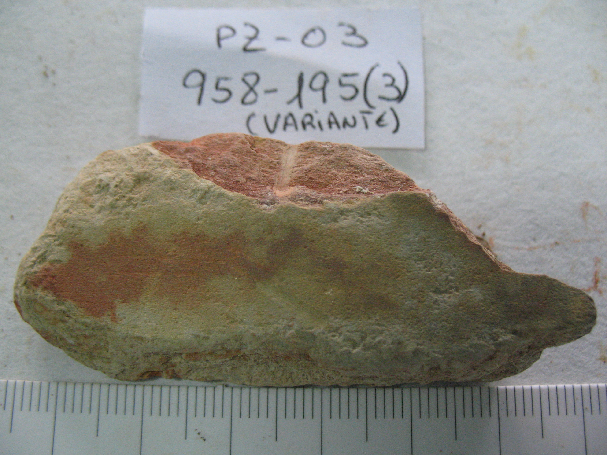 |
|
GL |
Frecuencia |
Litolofacies: |
| 1340 | 19 | Pizarras, grauwacas y cuarcitas |
| 1340 | 8 | Pizarras, areniscas y cuarcitas |
| 1340 | 3 | Pizarras, areniscas y cuarcitas con tufitas locales |
| 2050 | 2 | Pizarras, tufitas y tobas |
| 2050 | 1 | Pizarras y tufitas |
|
Litofacies secundarias: |
||
| 1340 | 2 | Pizarras, grauwacas y cuarcitas |
| 2050 | 1 |
Pizarras y tufitas |
PZ-04. Pizarra gris verdosa
| 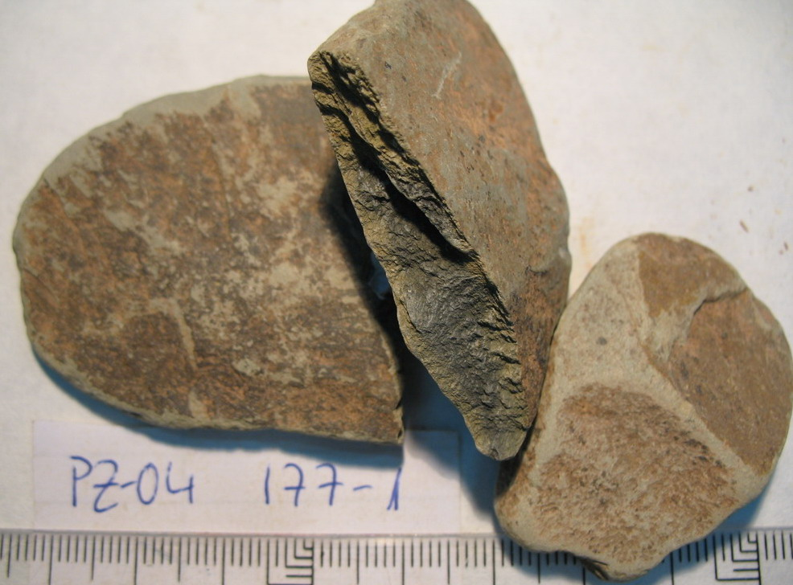 | Colores: | Verdoso gris claro; pardo rojizo muy oscuro | Color: |
- Verdoso-gris claro (corte): 5Y6/3, Oliva pálido - Pardo rojizo oscuro (superficie): 5YR4/1, Gris oscuro - Beige rosado (superficie): 7.5YR7/4, Rosa - Gris oscuro (corte): 5Y5/1, Gris - Gris claro (superficie): 5Y7/1, Gris claro |
||
| Color raya: | Blanco verdoso | |||||
| Grano: | Fino | |||||
| Dureza: | Uña |
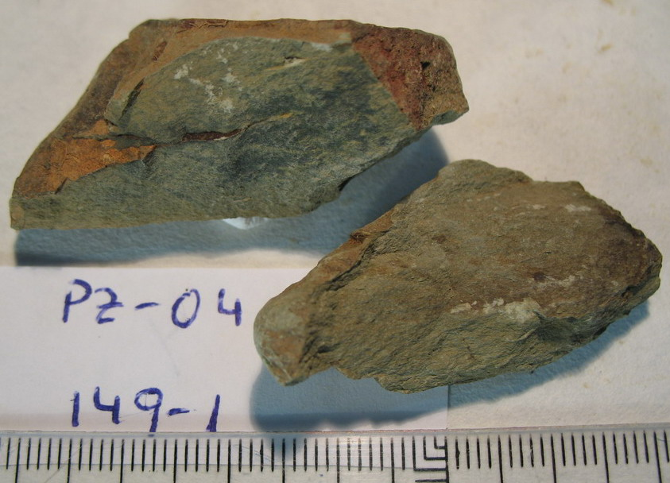 |
||||
| Friabilidad : | Media | |||||
| Forma: | Plana | |||||
| Exfoliación: | Irregular (tipo pizarra) difícil | |||||
| Esquistosidad: |
Apreciable |
|||||
| Tacto: |
Suave, sericítico (mancha) |
|||||
| Densidad: |
2,35 g/ml |
|||||
|
HCl 20%: |
No | |||||
| Observaciones: Roca del perfil 959-177, con tacto áspero en las zonas rotas. Interior gris muy oscuro y zona meteorizada verdosa oliva oscuro. Recubrimientos de óxido de hierro. Las muestras del perfil 959-157-2 tienen dureza de navaja; la roca es más compacta. Muestras guardadas: 959-177 (1), 959-157 (2), 959-64 (1), 959-149 (1), 461-P1 | 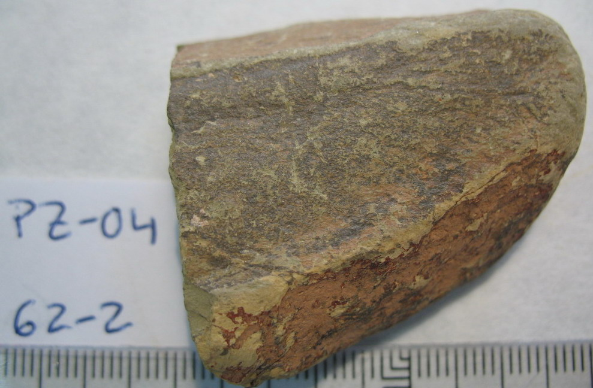 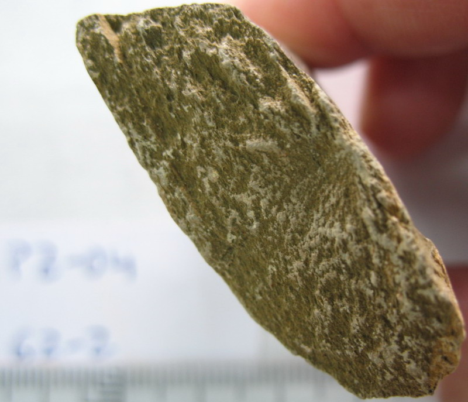 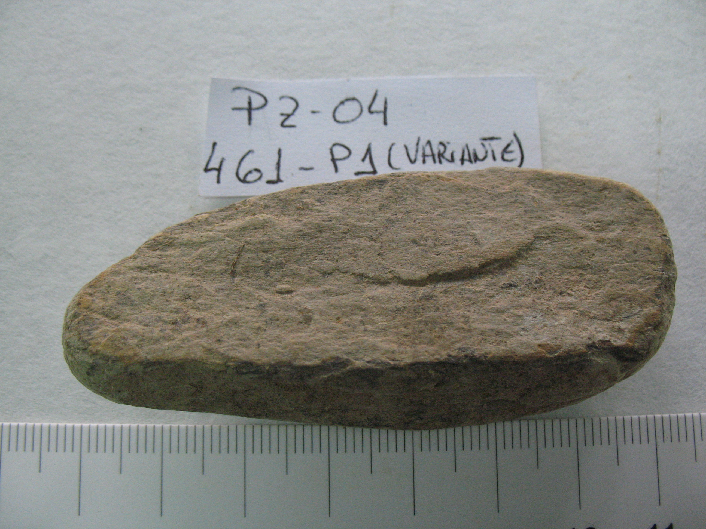 |
|
GL |
Frecuencia |
Litolofacies: |
| 1150 | 10 | Pizarras y grauwacas |
| 1150 | 9 | Pizarras y algunas grauwacas con Posidonomia, Goniatites y Archaeocalamites |
| 1150 | 9 | Pizarras y grauwacas con Posidonomyas, Goniatites y Archaeocalamites |
| 1140 | 6 | Pizarras basales con Posidonomyas, Goniatites y Archaeocalamites |
| 1150 | 5 | Grauwacas y pizarras con Posidonomyas, Goniatites y Archaeocalamites |
| 1150 | 5 | Pizarras basales con Posidonomyas, Goniatites y Archaeocalamites |
| 3160 | 3 | Conglomerados, arenas y limos |
| 1140 | 3 | Pizarras y algunas grauwacas con Posidonomyas, Goniatites y Archaeocalamites |
| 1340 | 2 | Grauwacas y pizarras |
| 1240 | 1 | Grauwacas y pizarras con Posidonomyas, Goniatites y Archaeocalamites |
| 1250 | 1 | Grauwacas y pizarras con Posidonomia, Goniatites y Archaeocalamites |
| 1340 | 1 | Pizarras, areniscas y cuarcitas con tufitas locales |
| 2040 | 1 | Pizarras, tufitas y tobas |
|
Litofacies secundarias: |
||
| 1240 | 6 | Grauwacas y pizarras con Posidonomia, Goniatites y Archaeocalamites |
| 1140 | 4 | Pizarras con algunas grauwacas con Posidonomyas |
| 3160 | 2 | Conglomerados, arenas y limos |
| 1340 | 2 | Pizarras, areniscas y cuarcitas con tufitas locales |
| 1250 | 1 | Grauwacas y pizarras con Posidonomia, Goniatites y Archaeocalamites |
| 1140 | 1 | Pizarras y algunas grauwacas con Posidonomia, Goniatites y Archaeocalamites |
| 1150 | 1 | Pizarras y grauwacas |
| 1150 | 1 | Pizarras y grauwacas con Posidonomyas, Goniatites y Archaeocalamites |
| 2040 | 1 | Pizarras, tufitas y tobas |